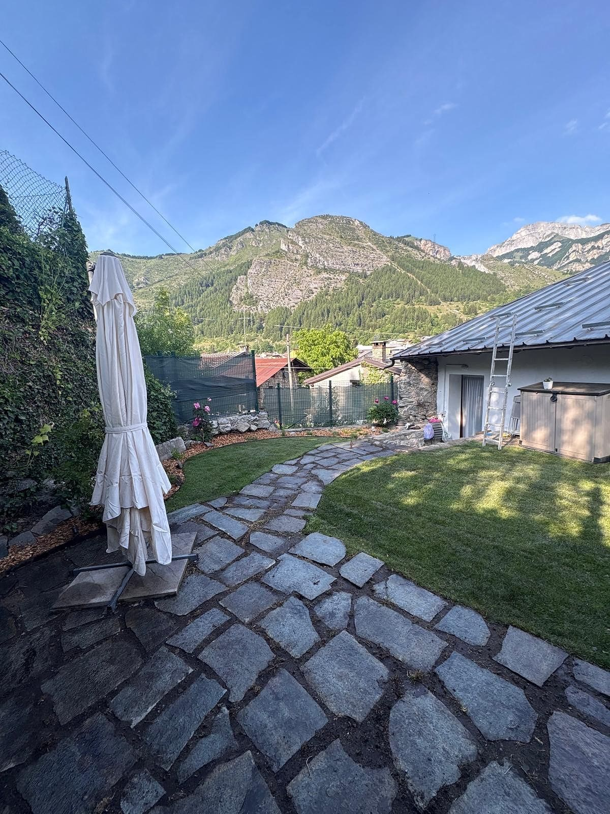
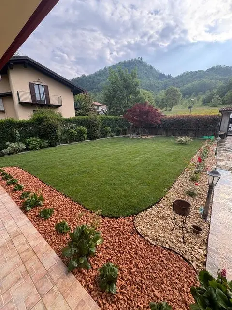
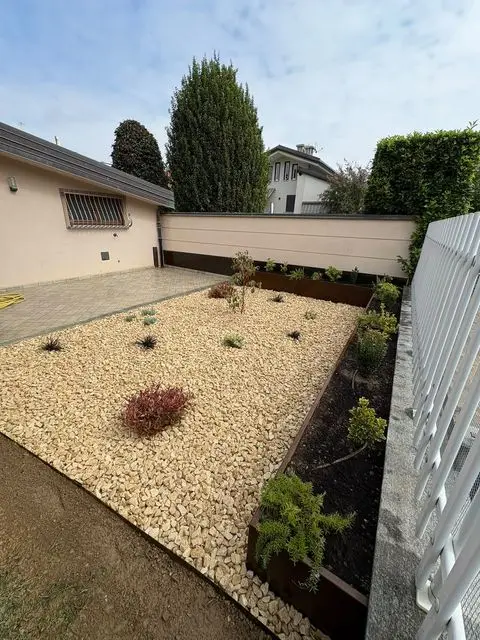
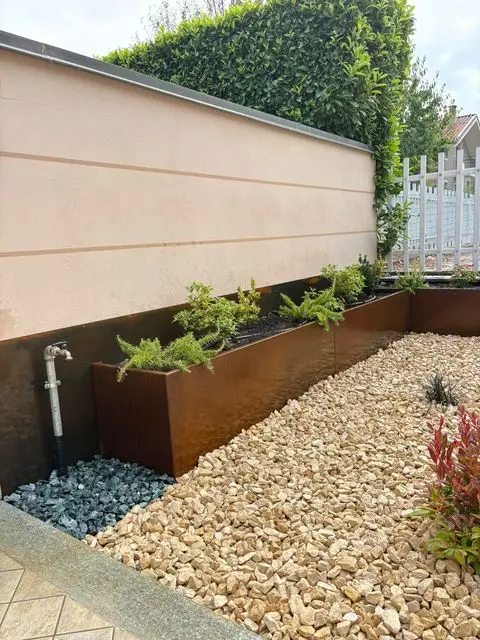
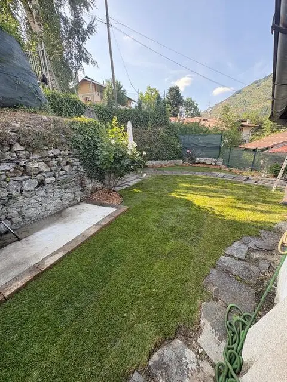
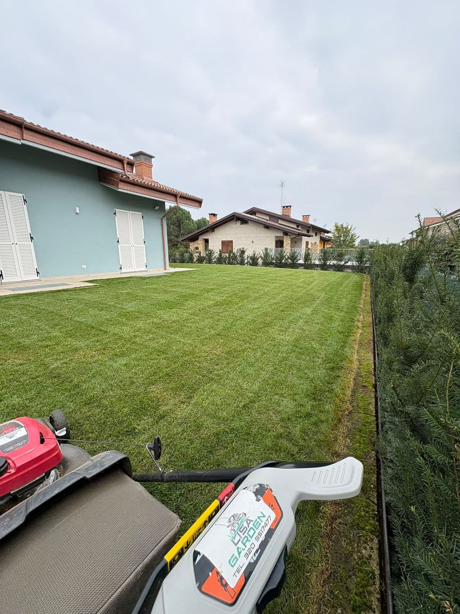
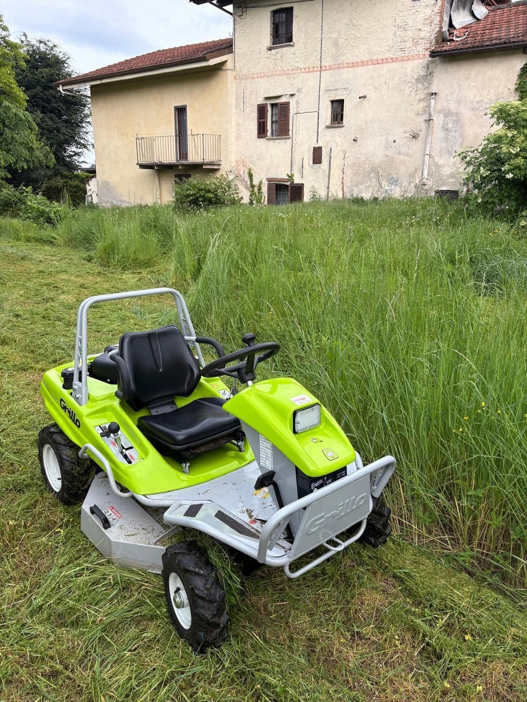

Il tuo giardino, curato davvero
Prati rasati, siepi in forma, l'acqua dove serve. Manutenzione e nuovi giardini a Cuneo e in provincia.
Lisa Garden
Andrea Lisa, giardiniere a Vignolo
Lisa Garden nasce ufficialmente nel gennaio 2026, ma le sue radici sono più lontane: anni di giardinaggio fatto per piacere, quando il verde era una passione e non ancora un lavoro.
Con il tempo quella passione è cresciuta ed è diventata competenza, esperienza e voglia di costruire un progetto professionale. Oggi Lisa Garden è la realizzazione di un desiderio coltivato fin da ragazzo: trasformare l'amore per il verde in un'attività concreta, fondata su cura, dedizione e formazione.
Un percorso che tiene insieme esperienza sul campo, attenzione ai dettagli e voglia di continuare a imparare, per offrire interventi curati e soluzioni adatte alle esigenze di ogni spazio verde.
Ogni lavoro lo segue di persona il titolare, dalla prima visita alla consegna.




Cosa facciamo
Dalla cura di tutti i giorni alla realizzazione di un giardino nuovo, fino a recinzioni in castagno e trinciatura. Ogni lavoro parte da una visita sul posto e da un preventivo su misura.
-

- Taglio del prato
- Pulizia di aiuole e vialetti
- Rimozione delle erbe infestanti
- Raccolta del verde tagliato
- Potatura di siepi e arbusti
- Cura periodica delle piante
Interventi periodici o singoli, per chi non ha tempo di seguire il giardino o vuole tenerlo curato con continuità. Per il diserbo Andrea ha seguito il corso per utilizzatori professionali di prodotti fitosanitari.
Chiedi un preventivo -

- Progettazione su misura
- Posa dell'impianto
- Irrigazione a goccia per aiuole e vasche
- Manutenzione degli impianti
Per ridurre le annaffiature a mano e dare a prato e piante l'acqua di cui hanno bisogno.
Chiedi un preventivo -

- Progetto su misura
- Prati a semina o in rotoli
- Aiuole e bordure
- Pacciamatura con corteccia o ghiaia decorativa
Ogni spazio viene progettato su misura per valorizzare l'ambiente e rispondere alle esigenze del cliente.
Chiedi un preventivo -
- Pali in legno di castagno
- Scavo e posa con mini escavatore
- Tracciamento della linea
- Staccionate su misura
Una recinzione in legno naturale che si inserisce bene nel verde, anche su terreni ampi.
Chiedi un preventivo -

- Trinciatura con trattorino trinciaerba
- Erba alta e sterpaglie
- Terreni incolti e bordi
- Prima della preparazione del terreno
Per prati abbandonati, terreni da recuperare o aree da tenere pulite durante la stagione.
Chiedi un preventivo
Come lavoriamo
Visita sul posto
Andrea viene a vedere il giardino e ascolta cosa ti serve.
Preventivo su misura
Un preventivo pensato sul tuo spazio e sul lavoro da fare.
Il lavoro
Lo segue di persona il titolare, dall'inizio alla consegna.
Nel tempo
Se vuoi, il giardino resta seguito con interventi periodici.
Prima e dopo
Come cambia uno spazio verde quando ci lavoriamo: le foto sono quelle dei cantieri, scattate prima, durante e dopo.
Giardino privato
Aiuola lungo il vialetto
Dalle erbe spontanee alla ghiaia decorativa: infestanti tolte, terreno livellato, bordure scure e ghiaia in quattro colori disegnata a curve, con corteccia attorno alle piante che c'erano già.
Chiedi un preventivo
Rispondi a qualche domanda e ti contatteremo con un preventivo su misura.
Passo 1 di 4
Di cosa hai bisogno?
Quanto è grande lo spazio?
Dove si trova il giardino?
Inviando la richiesta, i dati inseriti vengono usati solo per risponderti. Leggi l'informativa privacy.
Seleziona un'opzione per continuare.
Lavori fatti
Giardini curati, terreni preparati, case di montagna e recinzioni in castagno. Tocca una foto per ingrandirla.
Dove lavoriamo
La sede è a Vignolo. Lavoriamo soprattutto a Cuneo e nei comuni intorno; per il resto della provincia valutiamo ogni richiesta in base alla distanza e al tipo di lavoro.
Zone principali
- Vignolo(sede)
- Cuneo
- Borgo San Dalmazzo
- Boves
Comuni vicini su richiesta
- Cervasca
- Bernezzo
- Caraglio
- Valgrana
- Roccasparvera
- Gaiola
- Moiola
- Roccavione
- Robilante
- Peveragno
- Beinette
- Centallo
- Busca
La disponibilità dipende dal periodo e dal tipo di intervento: scrivici e ti rispondiamo.
Resto della provincia
Valle Stura, Valle Grana, Valle Gesso e Valle Vermenagna, ma anche Fossano, Saluzzo e Mondovì: raccontaci il lavoro e valutiamo insieme se possiamo seguirlo.
Formazione e qualifiche
Qualifiche e formazione di Andrea Lisa, con il loro riferimento.
-
Qualifica professionale
Responsabile tecnico per la manutenzione delle aree verdi
DGR 39-8764/2019 · risulta dalla visura camerale della ditta
-
Attestato di formazione
Utilizzatore professionale di prodotti fitosanitari
Corso di 20 ore, maggio 2026 · Falchi & Partners, agenzia formativa accreditata dalla Regione Umbria · D.Lgs. 150/2012
-
In sintesi
Abilitazioni e competenze tecniche
- Manutenzione aree verdi
- Prodotti fitosanitari
- Mini escavatore
- Trinciaerba
- Irrigazione a goccia
- Recinzioni in castagno